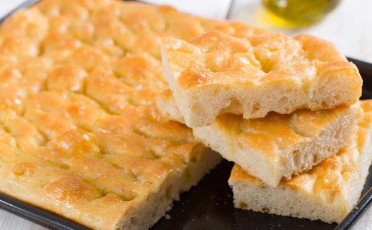

Ingredienti:
- farina
- lievito
- acqua
- olio d’oliva
- sale
- rosmarino
- olive
Preparazione:
In una ciotola, sciogli il lievito in acqua tiepida. Aggiungi gradualmente la farina e mescola con una forchetta. Unisci l’olio d’oliva e il sale, impastando fino a ottenere un composto liscio e omogeneo. Copri l’impasto con un canovaccio e lascia lievitare in un luogo tiepido per circa 2 ore, finché raddoppia di volume. Stendi l’impasto su una teglia unta, creando delle piccole fossette con le dita. Condisci con un filo d’olio, rosmarino, olive e una spolverata di sale grosso. Cuoci in forno preriscaldato a 200°C per circa 20-25 minuti, finché la focaccia risulta dorata.
Tempo di realizzazione: 2 ore e 45 minuti (inclusa la lievitazione)
Difficoltà: 3/5

Torna alla pagina principale